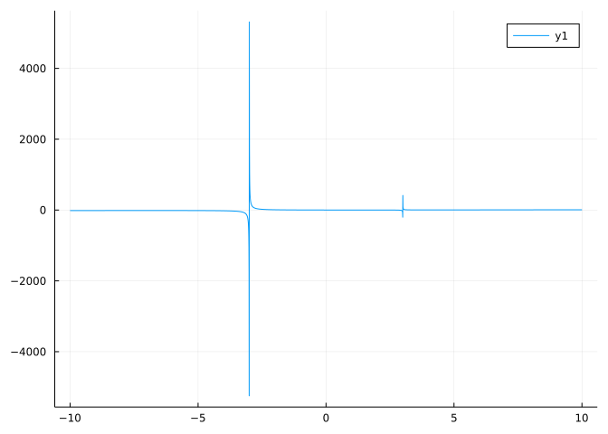
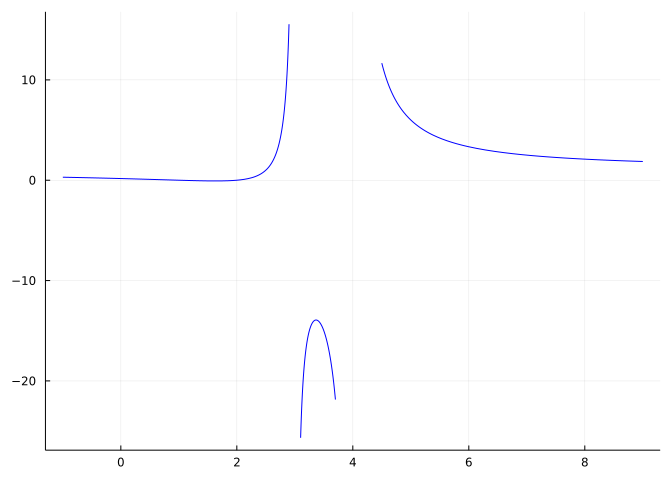
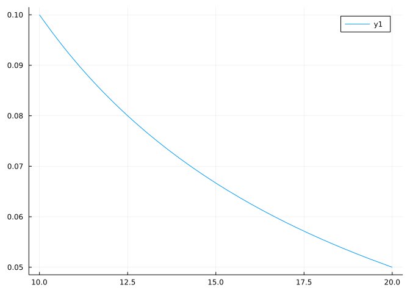
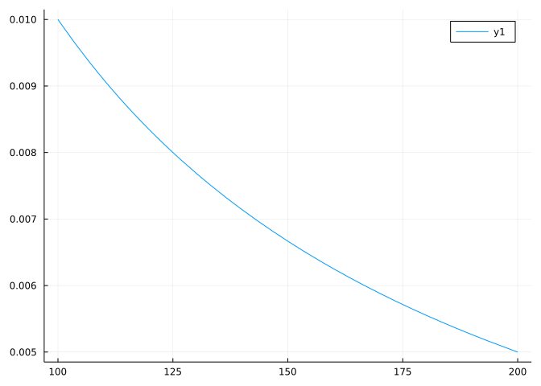

f(x) = (x-1)^2 * (x-2) / ((x+3)*(x-3) )
plot(f, -10, 10)
This section uses the following add-on packages:
The Polynomials package is “imported” to avoid naming collisions with SymPy; names will need to be qualified.
A rational expression is the ratio of two polynomial expressions. Such expressions arise in many modeling situations. As many facts are known about polynomial expressions, much can be determined about rational expressions. This section covers some additional details that arise when graphing such expressions.
The rational numbers are simply ratios of integers, of the form \(p/q\) for non-zero \(q\). A rational function is a ratio of polynomial functions of the form \(p(x)/q(x)\), again \(q\) is non-zero, but may have zeros.
We know that polynomials have nice behaviors due to the following facts:
Rational functions are not quite so nice:
Here, as with our discussion on polynomials, we are interested for now in just a few properties:
These questions can often be answered with a graph, but with rational functions we will see that care must be taken to produce a useful graph.
For example, consider this graph generated from a simple rational function:
\[ f(x) = \frac{(x-1)^2 \cdot (x-2)}{(x+3) \cdot (x-3)}. \]
We would be hard pressed to answer any of the three questions above from the graph, though, on inspection, we might think the strange spikes have something to do with \(x\) values where \(q(x)=0\).
The question of big or small \(x\) is not answered well with this graph, as the spikes dominate the scale of the \(y\)-axis. Setting a much larger viewing window illuminates this question:
We can see from this, that the function eventually looks like a slanted straight line. The eventual shape of the graph is something that can be determined just from the two leading terms.
The spikes haven’t vanished completely. It is just that with only a few hundred points to make the graph, there aren’t any values near enough to the problem to make a large spike. The spikes happen because the function has a vertical asymptote at these values. Though not quite right, it is reasonable to think of the graph being made by selecting a few hundred points in the specified domain, computing the corresponding \(y\) values, plotting the pairs, and finally connecting the points with straight line segments. Near a vertical asymptote the function values can be arbitrarily large in absolute values, though at the vertical asymptote the function is undefined. This graph doesn’t show such detail.
The spikes will be related to the points where \(q(x) = 0\), though not necessarily all of them – not all such points will produce a vertical asymptote.
Where the function crosses \(0\) is very hard to tell from these two graphs. As well, other finer features, such as local peaks or valleys, when present, can be hard to identify as the \(y\)-scale is set to accommodate the asymptotes. Working around the asymptotes requires some extra effort. Strategies are discussed herein.
Formally, an asymptote of a curve is a line such that the distance between the curve and the line approaches \(0\) as they tend to infinity. Tending to infinity can happen as \(x \rightarrow \pm \infty\) or \(y \rightarrow \pm \infty\), the former being related to horizontal asymptotes or slant asymptotes, the latter being related to vertical asymptotes.
Let’s look more closely at our example rational function using symbolic math.
In particular, let’s rewrite the expression in terms of its numerator and denominator:
Euclid’s division algorithm can be used for polynomials \(a(x)\) and \(b(x)\) to produce \(q(x)\) and \(r(x)\) with \(a = b\cdot q + r\) and the degree of \(r(x)\) is less than the degree of \(b(x)\). This is in direct analogy to the division algorithm of integers, only there the value of the remainder, \(r(x)\), satisfies \(0 \leq r < b\). Given \(q(x)\) and \(r(x)\) as above, we can reexpress the rational function
\[ \frac{a(x)}{b(x)} = q(x) + \frac{r(x)}{b(x)}. \]
The rational expression on the right-hand side has larger degree in the denominator.
The division algorithm is implemented in Julia generically through the divrem method:
This yields the decomposition of num/den:
A similar result can be found using the apart function, which can be easier to use if the expression is not given in terms of a separate numerator and denominator.
This decomposition breaks the rational expression into two pieces: \(x-4\) and \(40/(3x+9) + 2/(3x-9)\). The first piece would have a graph that is the line with slope \(1\) and \(y\)-intercept \(4\). As \(x\) goes to \(\infty\), the second piece will clearly go towards \(0,\) as this simple graph shows:
Similarly, a plot over \([-100, -10]\) would show decay towards \(0\), though in that case from below. Combining these two facts then, it is now no surprise that the graph of the rational function \(f(x)\) should approach a straight line, in this case \(y=x-4\) as \(x \rightarrow \pm \infty\).
We can easily do most of this analysis without needing a computer or algebra. First, we should know the four eventual shapes of a polynomial, that the graph of \(y=mx\) is a line with slope \(m\), the graph of \(y = c\) is a constant line at height \(c\), and the graph of \(y=c/x^m\), \(m > 0\) will decay towards \(0\) as \(x \rightarrow \pm\infty\). The latter should be clear, as \(x^m\) gets big, so its reciprocal goes towards \(0\).
The factored form, as \(p\) is presented, is a bit hard to work with, rather we use the expanded form, which we get through the cancel function
We can see that the numerator is of degree \(3\) and the denominator of degree \(2\). The leading terms are \(x^3\) and \(x^2\), respectively. If we were to pull those out we would get:
\[ \frac{x^3 \cdot (1 - 4/x + 5/x^2 - 2/x^3)}{x^2 \cdot (1 - 9/x^2)}. \]
The terms \((1 - 4/x + 5/x^2 - 2/x^3)\) and \((1 - 9/x^2)\) go towards \(1\) as \(x \rightarrow \pm \infty\), as each term with \(x\) goes towards \(0\). So the dominant terms comes from the ratio of the leading terms, \(x^3\) and \(x^2\). This ratio is \(x\), so their will be an asymptote around a line with slope \(1\). (The fact that the asymptote is \(y=x-4\) takes a bit more work, as a division step is needed.)
Just by looking at the ratio of the two leading terms, the behaviour as \(x \rightarrow \pm \infty\) can be discerned. If this ratio is of:
To expand on the first points where the degree of the numerator is greater than that of the denominator, we have from the division algorithm that if \(a(x)\) is the numerator and \(b(x)\) the denominator, then \(a(x)/b(x) = q(x) + r(x)/b(x)\) where the degree of \(b(x)\) is greater than the degree of \(r(x)\), so the right-most term will have a horizontal asymptote of \(0\). This says that the graph will eventually approach the graph of \(q(x)\), giving more detail than just saying it follows the shape of the leading term of \(q(x)\), at the expense of the work required to find \(q(x)\).
Consider the rational expression
\[ \frac{17x^5 - 300x^4 - 1/2}{x^5 - 2x^4 + 3x^3 - 4x^2 + 5}. \]
The leading term of the numerator is \(17x^5\) and the leading term of the denominator is \(x^5\). The ratio is \(17\) (or \(17x^0 = 17x^{5-5}\)). As such, we would have a horizontal asymptote \(y=17\).
If we consider instead this rational expression:
\[ \frac{x^5 - 2x^4 + 3x^3 - 4x^2 + 5}{5x^4 + 4x^3 + 3x^2 + 2x + 1} \]
Then we can see that the ratio of the leading terms is \(x^5 / (5x^4) = (1/5)x\). We expect a slant asymptote with slope \(1/5\), though we would need to divide to see the exact intercept. This is found with, say:
p = (x^5 - 2x^4 + 3x^3 - 4x^2 + 5) / (5x^4 + 4x^3 + 3x^2 + 2x + 1)
quo, rem = divrem(numerator(p), denominator(p)) # or apart(p)
quoThe rational function
\[ \frac{5x^3 + 6x^2 + 2}{x-1} \]
has decomposition \(5x^2 + 11x + 11 + 13/(x-1)\):
The graph of has nothing in common with the graph of the quotient for small \(x\)
But the graphs do match for large \(x\):
Finally, consider this rational expression in factored form:
\[ \frac{(x-2)^3\cdot(x-4)\cdot(x-3)}{(x-5)^4 \cdot (x-6)^2}. \]
By looking at the powers we can see that the leading term of the numerator will the \(x^5\) and the leading term of the denominator \(x^6\). The ratio is \(1/x^1\). As such, we expect the \(y\)-axis as a horizontal asymptote:
The apart function was useful to express a rational function in terms of a polynomial plus additional rational functions whose horizontal asymptotes are \(0\). This function computes the partial fraction decomposition of a rational function. Outside of the initial polynomial, this decomposition is a reexpression of a rational function into a sum of rational functions, where the denominators are irreducible, or unable to be further factored (non-trivially) and the numerators have lower degree than the denominator. Hence the horizontal asymptotes of \(0\).
To see another example we have:
The denominator, \(q\), has factors \(x-3\) and \(x^2 - x - 1\), each irreducible. The answer is expressed in terms of a sum of rational functions each with a denominator coming from one of these factors, possibly with a power.
As just discussed, the graph of \(1/x\) will have a horizontal asymptote. However it will also show a spike at \(0\):
Again, this spike is an artifact of the plotting algorithm. The \(y\) values for \(x\)-values just smaller than \(0\) are large negative values and the \(x\) values just larger than \(0\) produce large, positive \(y\) values.
The two points with \(x\) components closest to \(0\) are connected with a line, though that is misleading. Here we deliberately use far fewer points to plot \(1/x\) to show how this happens:
The line \(x = 0\) is a vertical asymptote for the graph of \(1/x\). As \(x\) values get close to \(0\) from the right, the \(y\) values go towards \(\infty\) and as the \(x\) values get close to \(0\) on the left, the \(y\) values go towards \(-\infty\).
This has everything to do with the fact that \(0\) is a root of the denominator.
For a rational function \(p(x)/q(x)\), the roots of \(q(x)\) may or may not lead to vertical asymptotes. For a root \(c\) if \(p(c)\) is not zero then the line \(x=c\) will be a vertical asymptote. If \(c\) is a root of both \(p(x)\) and \(q(x)\), then we can rewrite the expression as:
\[ \frac{p(x)}{q(x)} = \frac{(x-c)^m r(x)}{(x-c)^n s(x)}, \]
where both \(r(c)\) and \(s(c)\) are non zero. Knowing \(m\) and \(n\) (the multiplicities of the root \(c\)) allows the following to be said:
Finding the multiplicity may or may not be hard, but there is a very kludgy quick check that is often correct. With Julia, if you have a rational function that has f(c) evaluate to Inf or -Inf then there will be a vertical asymptote. If the expression evaluates to NaN, more analysis is needed. (The value of 0/0 is NaN, where as 1/0 is Inf.)
For example, the function \(f(x) = ((x-1)^2 \cdot (x-2)) / ((x+3) \cdot(x-3))\) has vertical asymptotes at \(-3\) and \(3\), as its graph illustrated. Without the graph we could see this as well:
As seen in several graphs, the basic plotting algorithm does a poor job with vertical asymptotes. For example, it may erroneously connect their values with a steep vertical line, or the \(y\)-axis scale can get so large as to make reading the rest of the graph impossible. There are some tricks to work around this.
Consider again the function \(f(x) = ((x-1)^2 \cdot (x-2)) / ((x+3) \cdot(x-3))\). Without much work, we can see that \(x=3\) and \(x=-3\) will be vertical asymptotes and there will be a slant asymptote with slope \(1\). How to graph this?
We can avoid the vertical asymptotes in our viewing window. For example we could look at the area between the vertical asymptotes, by plotting over \((-2.9, 2.9)\), say:
This backs off by \(\delta = 0.1\). As we have that \(3 - 2.9\) is \(\delta\) and \(1/\delta\) is 10, the \(y\) axis won’t get too large, and indeed it doesn’t.
This graph doesn’t show well the two zeros at \(x=1\) and \(x=2\), for that a narrower viewing window is needed. By successively panning throughout the interesting part of the graph, we can get a view of the function.
We can also clip the y axis. The plot function can be passed an argument ylims=(lo, hi) to limit which values are plotted. With this, we can have:
This isn’t ideal, as the large values are still computed, just the viewing window is clipped. This leaves the vertical asymptotes still effecting the graph.
There is another way, we could ask Julia to not plot \(y\) values that get too large. This is not a big request. If instead of the value of f(x) - when it is large - -we use NaN instead, then the connect-the-dots algorithm will skip those values.
This was discussed in an earlier section where the rangeclamp function was introduced to replace large values of f(x) (in absolute values) with NaN.
We can see the general shape of \(3\) curves broken up by the vertical asymptotes. The two on the side heading off towards the line \(x-4\) and the one in the middle. We still can’t see the precise location of the zeros, but that wouldn’t be the case with most graphs that show asymptotic behaviors. However, we can clearly tell where to “zoom in” were those of interest.
When sketching graphs of rational functions by hand, it is useful to use sign charts. A sign chart of a function indicates when the function is positive, negative, \(0\), or undefined. It typically is represented along the lines of this one for \(f(x) = x^3 - x\):
- 0 + 0 - 0 +
< ----- -1 ----- 0 ----- 1 ----- >The usual recipe for construction follows these steps:
-, +, 0, or *, as appropriate. The value comes from the fact that “continuous” functions may only change sign when they cross \(0\) or are undefined.With the computer, where it is convenient to draw a graph, it might be better to emphasize the sign on the graph of the function. The sign_chart function from CalculusWithJulia does this by numerically identifying points where the function is \(0\) or \(\infty\) and indicating the sign as \(x\) crosses over these points.
sign_chart (generic function with 1 method)One area where rational functions are employed is in approximating functions. Later, the Taylor polynomial will be seen to be a polynomial that approximates well a function (where “well” will be described later). The Pade approximation is similar, though uses a rational function for the form \(p(x)/q(x)\), where \(q(0)=1\) is customary.
Some example approximations are
\[ \sin(x) \approx \frac{x - 7/60 \cdot x^3}{1 + 1/20 \cdot x^2} \]
and
\[ \tan(x) \approx \frac{x - 1/15 \cdot x^3}{1 - 2/5 \cdot x^2} \]
We can look graphically at these approximations:
Polynomials package for rational functionsIn the following, we import some functions from the Polynomials package. We avoided loading the entire namespace, as there are conflicts with SymPy. Here we import some useful functions and the Polynomial constructor:
The Polynomials package has support for rational functions. The // operator can be used to create rational expressions:
(-4 + 8*x - 5*x^2 + x^3) // (6 - 5*x + x^2)A rational expression is a formal object; a rational function the viewpoint that this object will be evaluated by substituting values for the indeterminate. Rational expressions made within Polynomials are evaluated just like functions:
The rational expressions are not in lowest terms unless requested through the lowest_terms method:
(1.999999999999998 - 2.9999999999999982*x + 0.9999999999999996*x^2) // (-2.9999999999999973 + 1.0*x)For polynomials as simple as these, this computation is not a problem, but there is the very real possibility that the lowest term computation may be incorrect. Unlike SymPy which factors symbolically, lowest_terms uses a numeric algorithm and does not, as would be done by hand or with SymPy, factor the polynomial and then cancel common factors.
The distinction between the two expressions is sometimes made; the initial expression is not defined at \(x=2\); the reduced one is, so the two are not identical when viewed as functions of the variable \(x\).
Rational expressions include polynomial expressions, just as the rational numbers include the integers. The identification there is to divide by \(1\), thinking of \(3\) as \(3/1\). In Julia, we would just use
The integer can be recovered from the rational number using numerator:
Similarly, we can divide a polynomial by the polynomial \(1\), which in Julia is returned by one(p), to produce a rational expression:
And as with rational numbers, p is recovered by numerator:
One difference is the rational number 3//1 also represents other expressions, say 6/2 or 12/4, as Julia’s rational numbers are presented in lowest terms, unlike the rational expressions in Polynomials.
Rational functions also have a plot recipe defined for them that attempts to ensure the basic features are identifiable. As previously discussed, a plot of a rational function can require some effort to avoid the values associated to vertical asymptotes taking up too many of the available vertical pixels in a graph.
For the polynomial pq above, we have from observation that \(1\) and \(2\) will be zeros and \(x=3\) a vertical asymptote. We also can identify a slant asymptote with slope \(1\). These are hinted at in this graph:
To better see the zeros, a plot over a narrower interval, say \([0,2.5]\), would be encouraged; to better see the slant asymptote, a plot over a wider interval, say \([-10,10]\), would be encouraged.
For one more example of the default plot recipe, we redo the graphing of the rational expression we earlier plotted with rangeclamp:
We have seen some basic transformations of functions such as shifts and scales. For a polynomial expression we can implement these as follows, taking advantage of polynomial evaluation:
(Polynomial(3 + 8*x + 20*x^2), Polynomial(31 + 24*x + 5*x^2))A different polynomial transformation is inversion, or the mapping \(x^d \cdot p(1/x)\) where \(d\) is the degree of \(p\). This will yield a polynomial, as perhaps this example will convince you:
p = Polynomial([1, 2, 3, 4, 5])
d = Polynomials.degree(p) # degree is in SymPy and Polynomials, indicate which
pp = p // one(p)
x = variable(pp)
q = x^d * pp(1/x)
lowest_terms(q)(5.0 + 4.0*x + 3.0*x^2 + 2.0*x^3 + 1.0*x^4) // (1.0)We had to use a rational expression so that division by the variable was possible. The above indicates that the new polynomial, \(q\), is constructed from \(p\) by reversing the coefficients.
Inversion is like a funhouse mirror, flipping around parts of the polynomial. For example, the interval \([1/4,1/2]\) is related to the interval \([2,4]\). Of interest here, is that if \(p(x)\) had a root, \(r\), in \([1/4,1/2]\) then \(q(x) = x^d \cdot p(1/x)\) would have a root in \([2,4]\) at \(1/r\).
So these three transformations – scale, shift, and inversion – can be defined for polynomials.
Combined, the three can be used to create a Mobius transformation. For two values \(a\) and \(b\), consider the polynomial derived from \(p\) (again d=degree(p)) by:
\[ q = (x+1)^d \cdot p(\frac{ax + b}{x + 1}). \]
Here is a non-performant implementation as a Julia function:
function mobius_transformation(p, a, b)
x = variable(p)
p = p(x + a) # shift
p = p((b-a)*x) # scale
p = Polynomial(reverse(coeffs(p))) # invert
p = p(x + 1) # shift
p
endmobius_transformation (generic function with 1 method)We can verify this does what we want through example with the previously defined p:
As contrasted with
a, b = 4, 6
pq = 𝐩 // one(𝐩)
x = variable(pq)
d = Polynomials.degree(𝐩)
numerator(lowest_terms( (x + 1)^2 * pq((a*x + b)/(x + 1))))Now, why is this of any interest?
Mobius transforms are used to map regions into other regions. In this special case, the transform \(\phi(x) = (ax + b)/(x + 1)\) takes the interval \([0,\infty]\) and sends it to \([a,b]\) (\(0\) goes to \((a\cdot 0 + b)/(0+1) = b\), whereas \(\infty\) goes to \(ax/x \rightarrow a\)). Using this, if \(p(u) = 0\), with \(q(x) = (x-1)^d p(\phi(x))\), then setting \(u = \phi(x)\) we have \(q(x) = (\phi^{-1}(u)+1)^d p(\phi(\phi^{-1}(u))) = (\phi^{-1}(u)+1)^d \cdot p(u) = (\phi^{-1}(u)+1)^d \cdot 0 = 0\). That is, a zero of \(p\) in \([a,b]\) will appear as a zero of \(q\) in \([0,\infty)\) at \(\phi^{-1}(u)\).
The Descartes rule of signs applied to \(q\) then will give a bound on the number of possible roots of \(p\) in the interval \([a,b]\). In the example we did, the Mobius transform for \(a=4, b=6\) is \(15 - x - 11x^2 - 3x^3\) with \(1\) sign change, so there must be exactly \(1\) real root of \(p=(x-1)(x-3)(x-5)\) in the interval \([4,6]\), as we can observe from the factored form of \(p\).
Similarly, we can see there are \(2\) or \(0\) roots for \(p\) in the interval \([2,6]\) by counting the two sign changes here:
This observation, along with a detailed analysis provided by Kobel, Rouillier, and Sagraloff provides a means to find intervals that enclose the real roots of a polynomial.
The basic algorithm, as presented next, is fairly simple to understand, and hints at the bisection algorithm to come. It is due to Akritas and Collins. Suppose you know the only possible positive real roots are between \(0\) and \(M\) and no roots are repeated. Find the transformed polynomial over \([0,M]\):
Eventually, mathematically this will find isolating intervals for each positive real root. (The negative ones can be similarly isolated.)
Applying these steps to \(p\) with an initial interval, say \([0,9]\), we would have:
p = fromroots([1,3,5]) # (x-1)⋅(x-3)⋅(x-5) = -15 + 23*x - 9*x^2 + x^3
mobius_transformation(p, 0, 9) # 3
mobius_transformation(p, 0, 9//2) # 2
mobius_transformation(p, 9//2, 9) # 1 (and done)
mobius_transformation(p, 0, 9//4) # 1 (and done)
mobius_transformation(p, 9//4, 9//2) # 1 (and done)So the three roots (\(1\), \(3\), \(5\)) are isolated by \([0, 9/4]\), \([9/4, 9/2]\), and \([9/2, 9]\).
RealPolynomialRoots package.For square-free polynomials, the RealPolynomialRoots package implements a basic version of the paper of Kobel, Rouillier, and Sagraloff to identify the real roots of a polynomial using the Descartes rule of signs and the Möbius transformations just described.
The ANewDsc function takes a collection of coefficients representing a polynomial and returns isolating intervals for each real root. For example:
There were 3 isolating intervals found:
[4.0…, 5.75…]₂₅₆
[2.5…, 4.0…]₂₅₆
[-0.5…, 2.5…]₂₅₆These intervals can be refined to give accurate approximations to the roots:
3-element Vector{BigFloat}:
4.999999999999999999978818838372209316858537836404500951617991405528940163094376
3.00000000000000000000228052180275738141672875314696962474580485337412889736287
1.000000000000000000001600823049257141607920916959331086732169942277170804345587More challenging problems can be readily handled by this package. The following polynomial
has three real roots, two of which are clustered very close to each other:
There were 3 isolating intervals found:
[1.44…, 3.5…]₅₃
[0.00787401574803149525746…, 0.00787401574803149764694…]₁₂₅
[0.00787401574803149290016…, 0.00787401574803149525746…]₁₂₅and
3-element Vector{BigFloat}:
2.105774229176482954331147708393555283178574664230195963820876046974182635968766
0.007874015748031497043329409918191318453387228182308257310586767800179700562408811
0.007874015748031494888487265185761051959181219819330269317981177157910151292598045The SymPy package (sympy.real_roots) can accurately identify the three roots but it can take a very long time. The Polynomials.roots function from the Polynomials package identifies the cluster as complex valued. Though the implementation in RealPolynomialRoots doesn’t handle such large polynomials, the authors of the algorithm have implementations that can quickly solve polynomials with degrees as high as \(10,000\).
The rational expression \((x^3 - 2x + 3) / (x^2 - x + 1)\) would have
The rational expression \((x^2 - x + 1)/ (x^3 - 2x + 3)\) would have
The rational expression \((x^2 - x + 1)/ (x^2 - 3x + 3)\) would have
The rational expression
\[ \frac{(x-1)\cdot(x-2)\cdot(x-3)}{(x-4)\cdot(x-5)\cdot(x-6)} \]
would have
The rational expression
\[ \frac{(x-1)\cdot(x-2)\cdot(x-3)}{(x-4)\cdot(x-5)\cdot(x-6)} \]
would have
The rational expression
\[ \frac{x^3 - 3x^2 + 2x}{3x^2 - 6x + 2} \]
has a slant asymptote. What is the equation of that line?
Look at the graph of the function \(f(x) = ((x-1)\cdot(x-2)) / ((x-3)\cdot(x-4))\)

Is the following common conception true: “The graph of a function never crosses its asymptotes.”
(The wikipedia page indicates that the term “asymptote” was introduced by Apollonius of Perga in his work on conic sections, but in contrast to its modern meaning, he used it to mean any line that does not intersect the given curve. It can sometimes take a while to change perception.)
Consider the two graphs of \(f(x) = 1/x\) over \([10,20]\) and \([100, 200]\):


The two shapes are basically identical and do not look like straight lines. How does this reconcile with the fact that \(f(x)=1/x\) has a horizontal asymptote \(y=0\)?
The amount of drug in a bloodstream after \(t\) hours is modeled by the rational function
\[ r(t) = \frac{50t^2}{t^3 + 20}, \quad t \geq 0. \]
What is the amount of the drug after \(1\) hour?
r1 (generic function with 1 method)What is the amount of drug in the bloodstream after 24 hours?
What is more accurate: the peak amount is
This graph has
The (low-order) Pade approximation for \(\sin(x)\) was seen to be \((x - 7/60 \cdot x^3)/(1 + 1/20 \cdot x^2)\). The graph showed that this approximation was fairly close over \([-\pi, \pi]\). Without graphing would you expect the behaviour of the function and its approximation to be similar for large values of \(x\)?
Why?